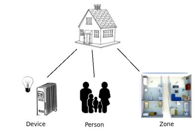

Hello Everest!
Here goes the Everest, Aconcagua and other Seven Summits.
Requirement
In order to follow the tutorial, you need to download :
- This OSGi framework ( based on Chameleon ). You can download and build the test distribution from everest-distrib.
- A ReST plug-in for your browser to interact with your domain( google chrome : Advanced ReST Client, mozilla : restClient).
Additionally, you need to have read the part about concept and getting started.
NB : In order to launch the everest-distrib, do :
- Linux : launch the chameleon script ( command :
./chameleon.sh --interactive) - Windows : use the following command :
java -jar .\bin\chameleon-core-1.0.0-SNAPSHOT.jar --interactive
General purpose about domain
What is a domain ?
A domain is a set of resources representing a particular context. The level of granularity of resources is defined by the designer of the domain.
First step : identify your resources
In this tutorial, the domain we will represent is the house. So the first and primordial step is to identify the several resources of the domain.
For this example we choose to represent the house like this : 
- Device : represents all the electronic equipment in the house (binarylight, sensors, cooler…), each device is defined by a serial number.
- Person : represents the inhabitant of the house.
- Zone : represents the different parts of the house(kitchen, bathroom…).
The granularity of the resources is defined by the designer of the domain. Indeed, we can detail the device resource in sub-resource as:
- Light : every equipment in relation with luminosity (binaryLight, photometer…).
- Heat : every equipment in relation with temperature (heater, thermometer…).
- Music : every equipment in relation with sound (speaker, audio source…).
Everest in all this
Everest is a resources manager which allowed to translate the precedent representation in a ReST way. In our case the ReST layout is :
- /casa - The root of the everest Casa domain.
- /devices
- $serialNumber - The device identified by $serialNumber.
- /person
- /zone
- /$nameZone - The zone named $nameZone.
- /devices
Build your domain
The root resource
The starting point of each domain is the root resource. It contains all the sub resource of the domain. In our case the root resource is Casa. So let’s implement your first resource !
public class CasaRootResource extends DefaultReadOnlyResource {
/**
* Name of the resource
*/
public static final String m_casaRoot = "casa";
/**
* Path of the resource : /casa
*/
public static final Path m_casaRootPath = Path.from(Path.SEPARATOR + m_casaRoot);
/**
* Description of the resource
*/
private static final String m_casaDescription = "casa resources";
/**
* List of the subResource : Contains the direct sub resource of root
*/
private final List<Resource> m_casaResources = new ArrayList<Resource>();
/**
* Constructor of Casa
*/
public CasaRootResource() {
super(m_casaRootPath);
}
/**
* Extract the sub resource of casa
*/
@Override
public List<Resource> getResources() {
return m_casaResources;
}
}
In order to create the resource hierarchy,we create 3 class PersonManager, GenericDeviceManager and ZoneManager.
- The code of GenericDeviceManager :
public class GenericDeviceManager extends DefaultReadOnlyResource {
/**
* Name of the resource manager
*/
public static final String m_genericDeviceName = "devices";
/**
* Path of the resource manager, here /casa/devices
*/
public static final Path m_genericDevicePath = m_casaRootPath.add(Path.from(Path.SEPARATOR + m_genericDeviceName));
/**
* Static instance of this singleton class
*/
private static final GenericDeviceManager m_instance = new GenericDeviceManager();
/**
* Getter of the static instance of this singleton class
*
* @return the singleton static instance
*/
public static GenericDeviceManager getInstance() {
return m_instance;
}
public GenericDeviceManager() {
super(m_genericDevicePath);
}
}
- The code of ZoneManager :
public class ZoneManager extends DefaultReadOnlyResource {
public static final String m_zoneName = "zone";
public static final Path m_zonePath = m_casaRootPath.add(Path.from(Path.SEPARATOR + m_zoneName));
/**
* Static instance of this singleton class
*/
private static final ZoneManager m_instance = new ZoneManager();
public static ZoneManager getInstance() {
return m_instance;
}
public ZoneManager() {
super(m_zonePath);
}
- The code of PersonManager :
public class PersonManager extends DefaultReadOnlyResource {
public static final String m_personName = "person";
public static final Path m_personPath = m_casaRootPath.add(Path.from(Path.SEPARATOR + m_personName));
/**
* Static instance of this singleton class
*/
private static final PersonManager m_instance = new PersonManager();
public static PersonManager getInstance() {
return m_instance;
}
public PersonManager() {
super(m_personPath);
}
}
Add sub resource to root
In order to create the rest architecture create 3 class on the precedent model :
- PersonManager :
- name : “person”
- path : “/casa/person”
- GenericDeviceManager :
- name : “devices”
- path : “/casa/devices”
- ZoneManager :
- name : “zone”
- path : “/casa/zone”
We consider that by default this 3 resources are present. So to add this resources to the root we just have to modify the constructor :
public CasaRootResource() {
super(m_casaRootPath);
m_casaResources.add(new GenericDeviceManager());
m_casaResources.add(new PersonManager());
m_casaResources.add(new ZoneManager());
}
Relation with sub resource
So let’s do your first request on your domain. Send a GET request on the following adress: http://localhost:8080/everest/casa The response will be :
{
__relations: {
}-
__observable: false
}
But where are the sub resource that i just add ? The fact is that there are no implicit relation between a resource and its sub-resource. So let’s declare this relation ! We will override getRelation method in the root resource by adding a relations to each sub-resource it has.
@Override
public List<Relation> getRelations() {
List<Relation> relations = new ArrayList<Relation>();
relations.addAll(super.getRelations());
for (Resource resource : getResources()) {
int size = getCanonicalPath().getCount();
String name = resource.getCanonicalPath().getElements()[size];
relations.add(new DefaultRelation(resource.getCanonicalPath(), Action.READ, getCanonicalPath().getLast() + ":" + name,
"Get " + name));
}
return relations;
}
This method will add a relation between the root resource and his sub-resources.
So now if you re-do a GET, you will obtain :
{
__relations: {
casa:devices: {
href: "http://localhost:8080/everest/casa/devices"
action: "READ"
name: "casa:devices"
description: "Get devices"
parameters: [0]
}-
casa:person: {
href: "http://localhost:8080/everest/casa/person"
action: "READ"
name: "casa:person"
description: "Get person"
parameters: [0]
}-
casa:zone: {
href: "http://localhost:8080/everest/casa/zone"
action: "READ"
name: "casa:zone"
description: "Get zone"
parameters: [0]
}-
}-
__observable: false
}
We see that this method will be very efficient in every case where resource contains sub resource. So a good practice is to create the following class :
public abstract class AbstractResourceCollection extends DefaultReadOnlyResource {
/**
* Constructor, same as {@code DefaultReadOnlyResource}
*
* @param path path of the resource
*/
public AbstractResourceCollection(Path path) {
super(path);
}
/**
* Extracts the direct children and add a {@literal READ} relation to them.
*
* @return list of relations
*/
@Override
public List<Relation> getRelations() {
List<Relation> relations = new ArrayList<Relation>();
relations.addAll(super.getRelations());
for (Resource resource : getResources()) {
int size = getCanonicalPath().getCount();
String name = resource.getCanonicalPath().getElements()[size];
relations.add(new DefaultRelation(resource.getCanonicalPath(), Action.READ, getCanonicalPath().getLast() + ":" + name,
"Get " + name));
}
return relations;
}
}
Every class which contains sub resource will be extend AbstractResourceCollection.
How everest run through the ReST architecture
If you send a GET request to "http://localhost:8080/everest/casa/zone"
{
__relations: {}
__observable: false
}
But how the everest core can run through the architecture to /zone ? He start to the root and browse recursively the tree invoking the getResources method. So it’s very important to override the getResources method either the everest-core couldn’t browse the domain.
Manage your resource
In this part we are focusing on the devices branches. In this branches we have two resources :
- GenericDeviceManager : it represents the /devices, the root of all devices
- GenericDeviceResource : it represents the /serialNumber, it is the representation of a unique device.
The device manager allowed us to manage a list of Device resource. Let’s implement the two class !
The implementation of the device manager :
public class GenericDeviceManager extends AbstractResourceCollection {
/**
* Name of the resource manager
*/
public static final String m_genericDeviceName = "devices";
/**
* Path of the resource manager, here /casa/devices
*/
public static final Path m_genericDevicePath = m_casaRootPath.add(Path.from(Path.SEPARATOR + m_genericDeviceName));
/**
* Map of Generic Device resource by serial Number
*/
private Map<String, GenericDeviceResource> m_genericDeviceResourcesMap = new HashMap<String, GenericDeviceResource>();
/**
* Static instance of this singleton class
*/
private static final GenericDeviceManager m_instance = new GenericDeviceManager();
/**
* Getter of the static instance of this singleton class
*
* @return the singleton static instance
*/
public static GenericDeviceManager getInstance() {
return m_instance;
}
public GenericDeviceManager() {
super(m_genericDevicePath);
}
@Override
public List<Resource> getResources() {
List<Resource> resources = new ArrayList<Resource>();
for (String key : m_genericDeviceResourcesMap.keySet()) {
resources.add(m_genericDeviceResourcesMap.get(key));
}
return resources;
}
}
The implementation of the device resource :
public class GenericDeviceResource extends DefaultResource {
/**
* Represented resource
*/
private final GenericDevice m_genericDevice;
/**
* Reference to resource manager
*/
private final GenericDeviceManager m_genericDeviceManager;
public GenericDeviceResource(GenericDevice genericDevice, GenericDeviceManager genericDeviceManager) {
super(genericDeviceManager.m_genericDevicePath.add(Path.from(Path.SEPARATOR + genericDevice.DEVICE_SERIAL_NUMBER)));
this.m_genericDevice = genericDevice;
this.m_genericDeviceManager = genericDeviceManager;
}
}
How to add resource to my manager ?
By adding a CREATE relation in your manager.
We proceed in two step to add the relation :
- First : modify the manager constructor like this to add a relation :
public GenericDeviceManager() {
super(m_genericDevicePath);
setRelations(
new DefaultRelation(getPath(), Action.CREATE, "create",
new DefaultParameter()
.name("serialNumber")
.description(" Serial number of the device")
.optional(false)
.type(String.class)));
}
- Second : implement the method create witch is called by the relation CREATE :
public Resource create(Request request) {
GenericDeviceResource resource = null;
/* Catch of the request argument */
String newSerialNumber = request.get("serialNumber", String.class);
if (newSerialNumber != null) {
/* Creation of a New Device */
GenericDevice newGenericDevice = new GenericDevice(newSerialNumber);
/* Creation of the resource which represent the device */
resource = new GenericDeviceResource(newGenericDevice, this);
/* Add the resource to the Map of sub resource*/
m_genericDeviceResourcesMap.put(newGenericDevice.DEVICE_SERIAL_NUMBER, resource);
}
return resource;
}
How to add Metadata to my resource ?
You must modify the Generic device resource like this :
public ResourceMetadata getMetadata() {
ImmutableResourceMetadata.Builder metadataBuilder = new ImmutableResourceMetadata.Builder();
metadataBuilder.set("Serial Number", m_genericDevice.DEVICE_SERIAL_NUMBER);
metadataBuilder.set("State Activated", m_genericDevice.STATE_ACTIVATED);
metadataBuilder.set("State Deactivated", m_genericDevice.STATE_DEACTIVATED);
metadataBuilder.set("State Property Name", m_genericDevice.STATE_PROPERTY_NAME);
metadataBuilder.set("Serial Unknown", m_genericDevice.STATE_UNKNOWN);
return metadataBuilder.build();
}
Now when you send a get command you have the metadata print in the answer.
How to interact with the object represented by the resource ?
With adding a UPDATE relation in your manager.
We proceed in two step to add the relation :
- First : modify the manager constructor like this to add a relation :
public GenericDeviceResource(GenericDevice genericDevice, GenericDeviceManager genericDeviceManager) {
super(genericDeviceManager.m_genericDevicePath.add(Path.from(Path.SEPARATOR + genericDevice.DEVICE_SERIAL_NUMBER)));
this.m_genericDevice = genericDevice;
this.m_genericDeviceManager = genericDeviceManager;
new DefaultRelation(getPath(), Action.UPDATE, "Update field",
new DefaultParameter()
.name("parameter/value")
.description(" Modify the parameter of the device with the value")
.optional(false)
.type(Map.class));
}
- Second : implement the method update witch is called by the relation UPDATE :
@Override
public Resource update(Request request) throws IllegalActionOnResourceException {
Map<String, ?> newMap = request.parameters();
if (newMap != null) {
for (String key : newMap.keySet()) {
if (key.contentEquals("STATE_DEACTIVATED"))
m_genericDevice.setSTATE_DEACTIVATED(newMap.get(key).toString());
}
}
return this;
}
Manage your relation
Relation between 2 resources
In our example, each device will be located in one zone. And, in a zone, we could have several devices. This fact will be represented by relations.
Relation device –> zone.
Let’s implement the relation in the DeviceResource. We imagine that a device is not fixed in the space, it can be move to an other zone. In rest the action is traduce by an UPDATE action on the resource. This action have already been implemented in How to interact with the object represented by the resource ?. We just have to add a new case when we see the key word zone.
else if (key.contentEquals("zone")){
m_genericDevice.zone = newMap.get(key).toString();
Relation relations = new DefaultRelation(ZoneManager.getInstance().getPath().add(Path.from(Path.SEPARATOR + m_genericDevice.zone )), Action.READ, "Location");
setRelations(relations);
}
So now if your update,with the ReST client, a device with a POST request (first parameter : zone, second parameter : bathroom) and do a GET request on the DeviceResource, we will see the relation called “Location” :
__relations: {
Location: {
href: "http://localhost:8080/everest/casa/zone/bathroom"
action: "READ"
name: "Location"
description: null
parameters: [0]
}-
}
But when we do a GET on http://localhost:8080/everest/casa/zone/bathroom we see :
{
Name: "bathroom"
Luminosity: "10"
__relations: {}-
__observable: false
}
There is not the relation ! So let’s do the second part in order to see how implement the relation between the bathroom and the device present in this zone.
Relation device <– zone.
When you update the location of a device you want that a relation between the zone and the device may be implemented too. In order too we implement two method in ZoneResource :
- setDeviceLocation(String serialNumber) : this method add a relation between the zone and a device identified by the serial number. It will used if a device appear in the zone.
- deleteDeviceLocation(String serialNumber) : this method delete a relation between the zone and a device identified by the serial number. It will used if a device is moved out of the zone.
public void deleteDeviceLocation(String serialNumber) {
List<Relation> relations ;
/*Browse the relation list until we find the relation corresponding to the relation that we want to delete*/
for (Relation current : getRelations()){
if(current.getName().equalsIgnoreCase("device"+serialNumber)){
relations = getRelations();
relations.remove(current) ;
setRelations(relations);
}
}
}
public void setDeviceLocation(String serialNumber) {
List<Relation> relations ;
/* save the all relation */
relations = getRelations();
/* add or update the relation with the device */
relations.add(new DefaultRelation(GenericDeviceManager.getInstance().getPath().add(Path.from(Path.SEPARATOR + serialNumber)), Action.READ, "device"+serialNumber)) ;
setRelations(relations);
}
Then this operation will be manage by the ZoneManager. So we need to declare a new field in the zone manager which contain the serialnumber of a device and the location of a device.This Map will be update each time that a device moved.
/**
* Map of Generic Device resource by serial Number
*/
private Map<String, String> m_genericDeviceByZone = new HashMap<String, String>();
To finish we need to create the method which update the relation between the zone and the device :
public void setChildLocation(String serialNumber,String Location) {
/* if the relation relation already exist, we delete the precedent relation before create a new one */
if(m_genericDeviceByZone.get(serialNumber) != null) {
m_zoneResourcesMap.get(m_genericDeviceByZone.get(serialNumber)).deleteDeviceLocation(serialNumber);
}
/* Add the device to the list or replace the old location */
m_genericDeviceByZone.put(serialNumber,Location);
for (String key : m_zoneResourcesMap.keySet()){
/* If the new location exist in the sub resource, a relation between the device and the sub resource will be create */
if (m_zoneResourcesMap.get(key).getPath().getLast().toString().equalsIgnoreCase(Location)){
m_zoneResourcesMap.get(key).setDeviceLocation(serialNumber);
}
}
}
This method will be called each time we UPDATE the device’s zone :
else if (key.contentEquals("zone")){
m_genericDevice.zone = newMap.get(key).toString();
Relation relations = new DefaultRelation(ZoneManager.getInstance().getPath().add(Path.from(Path.SEPARATOR + m_genericDevice.zone )), Action.READ, "Location");
setRelations(relations);
ZoneManager.getInstance().setChildLocation(m_genericDevice.DEVICE_SERIAL_NUMBER,newMap.get(key).toString());
}
So now after UPDATE a device’s zone, when we do a GET on the zone we will see :
{
Name: "bathroom"
Luminosity: "10"
__relations: {
device10: {
href: "http://localhost:8080/everest/casa/devices/10"
action: "READ"
name: "device10"
description: null
parameters: [0]
}-
}-
__observable: false
}